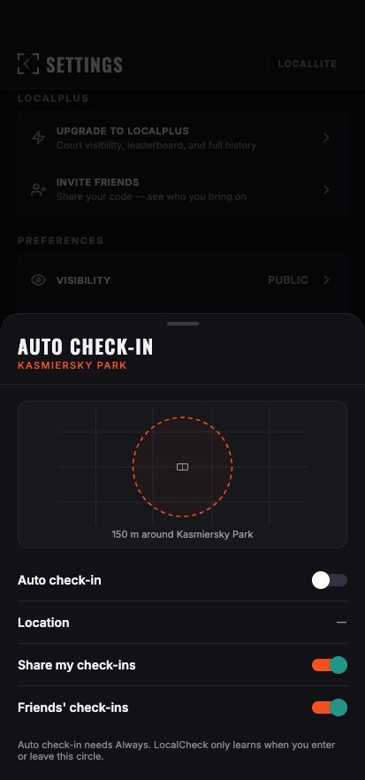

One flow · auto check-in geofence
Settings drawer → local court → 150 m circle
This page traces only the geofence shown in the Auto Check-In drawer: where the screen lives, where the selected court is saved, and where the radius is set.
The drawer in the app preview

The AUTO CHECK-IN row in Settings opens the AutoCheckInSettingsSheet. That drawer renders the circle visual.
Where the user’s court setting lives
Supabase The selected local court ID is stored on public.profiles.local_court_id. The Settings court picker calls setLocalCourt, which writes the field through updateProfileFields. The geofence context gets that court’s ID and coordinates from the loaded profile/court.
The on/off status is the phone’s registered geofence plus its location permission; it is derived in AutoCheckInContext and checked with Expo Location in isAutoCheckInRunning. There is no separate auto-check-in on/off field in the profile path shown here.
Where the radius is defined
150 metres The single source is AUTO_CHECK_IN_RADIUS_M. The regionFor function puts that value into the geofence radius. The visual label uses the same constant in GeofenceVisual.
When enabled, enableAutoCheckIn passes that region to Location.startGeofencingAsync. A local-court change updates the active region through syncAutoCheckIn.